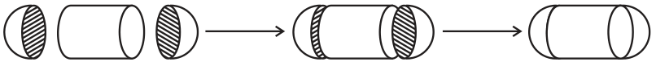
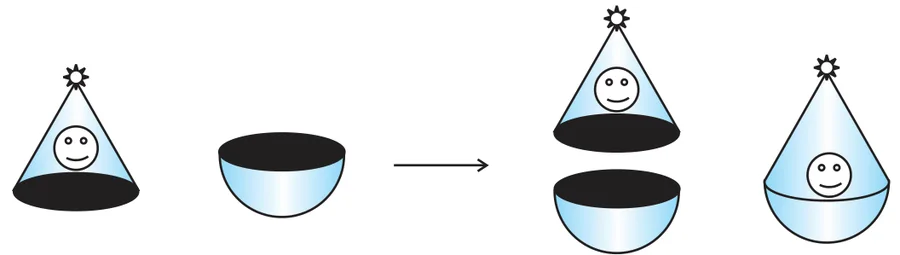
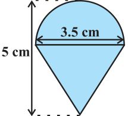
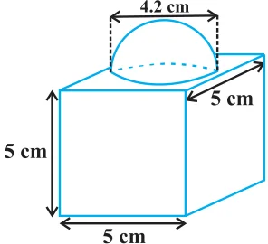
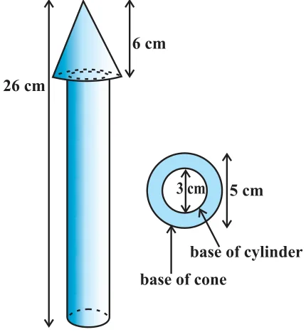
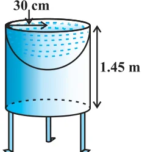

Let us consider the container seen in Fig. 12.2. How do we find the surface area of such a solid? Now, whenever we come across a new problem, we first try to see, if we can break it down into smaller problems, we have earlier solved. We can see that this solid is made up of a cylinder with two hemispheres stuck at either end. It would look like what we have in Fig. 12.4, after we put the pieces all together.

If we consider the surface of the newly formed object, we would be able to see only the curved surfaces of the two hemispheres and the curved surface of the cylinder.
So, the total surface area of the new solid is the sum of the curved surface areas of each of the individual parts. This gives,
\( \text{TSA of new solid} = \text{CSA of one hemisphere} + \text{CSA of cylinder} \)
\( + \text{ CSA of other hemisphere} \)
where TSA, CSA stand for ‘Total Surface Area’ and ‘Curved Surface Area’ respectively.
Let us now consider another situation. Suppose we are making a toy by putting together a hemisphere and a cone. Let us see the steps that we would be going through.
First, we would take a cone and a hemisphere and bring their flat faces together. Here, of course, we would take the base radius of the cone equal to the radius of the hemisphere, for the toy is to have a smooth surface. So, the steps would be as shown in Fig. 12.5.

At the end of our trial, we have got ourselves a nice round-bottomed toy. Now if we want to find how much paint we would require to colour the surface of this toy, what would we need to know? We would need to know the surface area of the toy, which consists of the CSA of the hemisphere and the CSA of the cone.
So, we can say:
\( \text{Total surface area of the toy} = \text{CSA of hemisphere} + \text{CSA of cone} \)
Now, let us consider some examples.
Example 1 :
Rasheed got a playing top (lattu) as his birthday present, which surprisingly had no colour on it. He wanted to colour it with his crayons. The top is shaped like a cone surmounted by a hemisphere (see Fig 12.6). The entire top is 5 cm in height and the diameter of the top is 3.5 cm. Find the area he has to colour. (Take \(\pi = \dfrac{22}{7}\))

Solution :
This top is exactly like the object we have discussed in Fig. 12.5. So, we can conveniently use the result we have arrived at there. That is :
\( \text{TSA of the toy} = \text{CSA of hemisphere} + \text{CSA of cone} \)
Now, the curved surface area of the hemisphere
\( = \dfrac{1}{2}(4\pi r^{2}) = 2\pi r^{2} \)
\( = \left(2 \times \dfrac{22}{7} \times \dfrac{3.5}{2} \times \dfrac{3.5}{2}\right)\text{cm}^{2} \)
Also, the height of the cone = height of the top – height (radius) of the hemispherical part
\( = \left(5 - \dfrac{3.5}{2}\right)\text{cm} = 3.25\ \text{cm} \)
So, the slant height of the cone \((l)\)
\( = \sqrt{r^{2} + h^{2}} = \sqrt{\left(\dfrac{3.5}{2}\right)^{2} + (3.25)^{2}}\ \text{cm} = 3.7\ \text{cm (approx.)} \)
Therefore, CSA of cone
\( = \pi r l = \left(\dfrac{22}{7} \times \dfrac{3.5}{2} \times 3.7\right)\text{cm}^{2} \)
This gives the surface area of the top as
\( = \left(2 \times \dfrac{22}{7} \times \dfrac{3.5}{2} \times \dfrac{3.5}{2}\right)\text{cm}^{2} + \left(\dfrac{22}{7} \times \dfrac{3.5}{2} \times 3.7\right)\text{cm}^{2} \)
\( = \dfrac{22}{7} \times \dfrac{3.5}{2}\,(3.5 + 3.7)\ \text{cm}^{2} = \dfrac{11}{2} \times (3.5 + 3.7)\ \text{cm}^{2} = 39.6\ \text{cm}^{2}\ \text{(approx.)} \)
You may note that ‘total surface area of the top’ is not the sum of the total surface areas of the cone and hemisphere.
Example 2 :
The decorative block shown in Fig. 12.7 is made of two solids — a cube and a hemisphere. The base of the block is a cube with edge 5 cm, and the hemisphere fixed on the top has a diameter of 4.2 cm. Find the total surface area of the block. (Take \(\pi = \dfrac{22}{7}\))

Solution :
The total surface area of the cube \(= 6 \times (\text{edge})^{2} = 6 \times 5 \times 5\ \text{cm}^{2} = 150\ \text{cm}^{2}\).
Note that the part of the cube where the hemisphere is attached is not included in the surface area.
So, the surface area of the block
\( = \text{TSA of cube} - \text{base area of hemisphere} + \text{CSA of hemisphere} \)
\( = 150 - \pi r^{2} + 2\pi r^{2} = (150 + \pi r^{2})\ \text{cm}^{2} \)
\( = 150\ \text{cm}^{2} + \left(\dfrac{22}{7} \times \dfrac{4.2}{2} \times \dfrac{4.2}{2}\right)\text{cm}^{2} \)
\( = (150 + 13.86)\ \text{cm}^{2} = 163.86\ \text{cm}^{2} \)
Example 3 :
A wooden toy rocket is in the shape of a cone mounted on a cylinder, as shown in Fig. 12.8. The height of the entire rocket is 26 cm, while the height of the conical part is 6 cm. The base of the conical portion has a diameter of 5 cm, while the base diameter of the cylindrical portion is 3 cm. If the conical portion is to be painted orange and the cylindrical portion yellow, find the area of the rocket painted with each of these colours. (Take \(\pi = 3.14\))

Solution :
Denote radius of cone by \(r\), slant height of cone by \(l\), height of cone by \(h\), radius of cylinder by \(r'\) and height of cylinder by \(h'\). Then \(r = 2.5\) cm, \(h = 6\) cm, \(r' = 1.5\) cm, \(h' = 26 - 6 = 20\) cm and
\( l = \sqrt{r^{2} + h^{2}} = \sqrt{2.5^{2} + 6^{2}}\ \text{cm} = 6.5\ \text{cm} \)
Here, the conical portion has its circular base resting on the base of the cylinder, but the base of the cone is larger than the base of the cylinder. So, a part of the base of the cone (a ring) is to be painted.
So, the area to be painted orange
\( = \text{CSA of the cone} + \text{base area of the cone} - \text{base area of the cylinder} \)
\( = \pi r l + \pi r^{2} - \pi (r')^{2} \)
\( = \pi[(2.5 \times 6.5) + (2.5)^{2} - (1.5)^{2}]\ \text{cm}^{2} \)
\( = \pi[20.25]\ \text{cm}^{2} = 3.14 \times 20.25\ \text{cm}^{2} \)
\( = 63.585\ \text{cm}^{2} \)
Now, the area to be painted yellow
\( = \text{CSA of the cylinder} + \text{area of one base of the cylinder} \)
\( = 2\pi r'h' + \pi (r')^{2} \)
\( = \pi r'(2h' + r') \)
\( = (3.14 \times 1.5)\,(2 \times 20 + 1.5)\ \text{cm}^{2} \)
\( = 4.71 \times 41.5\ \text{cm}^{2} \)
\( = 195.465\ \text{cm}^{2} \)
Example 4 :
Mayank made a bird-bath for his garden in the shape of a cylinder with a hemispherical depression at one end (see Fig. 12.9). The height of the cylinder is 1.45 m and its radius is 30 cm. Find the total surface area of the bird-bath. (Take \(\pi = \dfrac{22}{7}\))

Solution :
Let \(h\) be height of the cylinder, and \(r\) the common radius of the cylinder and hemisphere. Then,
the total surface area of the bird-bath
\( = \text{CSA of cylinder} + \text{CSA of hemisphere} \)
\( = 2\pi r h + 2\pi r^{2} = 2\pi r(h + r) \)
\( = 2 \times \dfrac{22}{7} \times 30(145 + 30)\ \text{cm}^{2} \)
\( = 33000\ \text{cm}^{2} = 3.3\ \text{m}^{2} \)